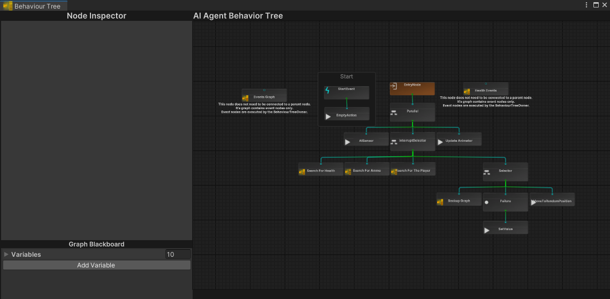
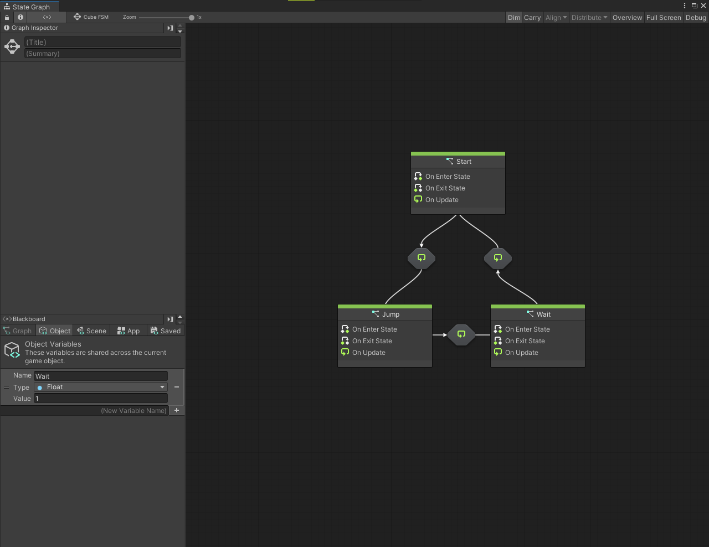
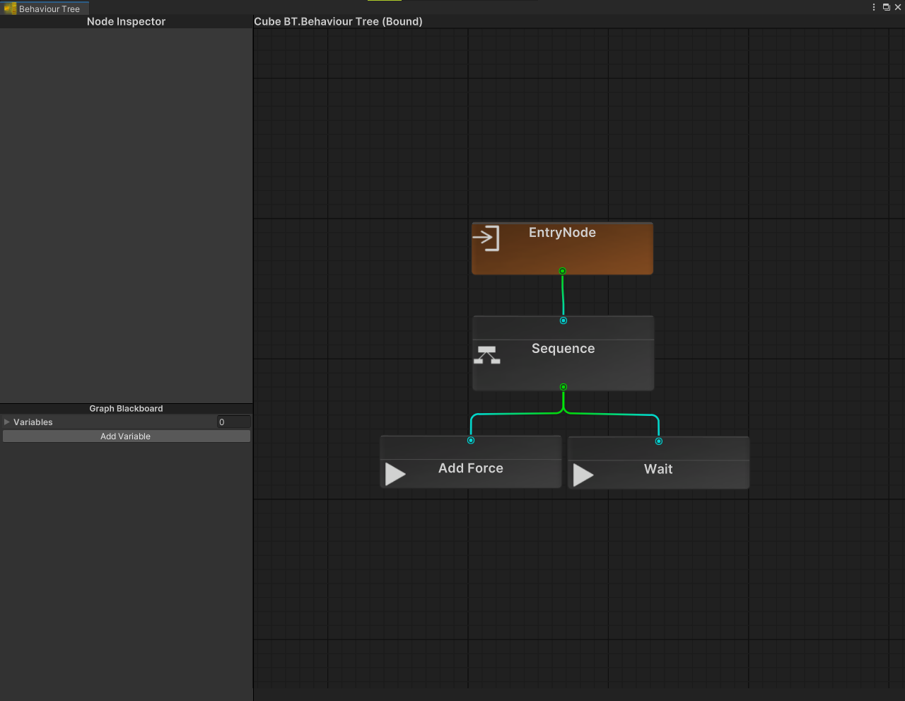
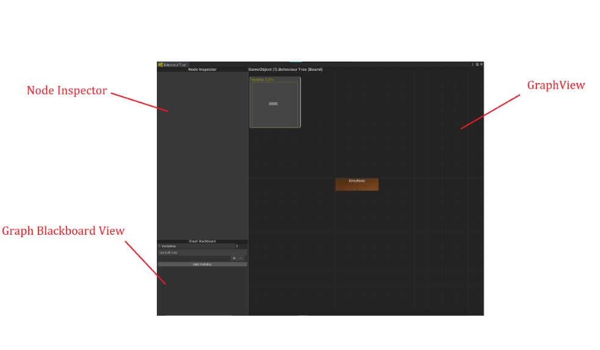
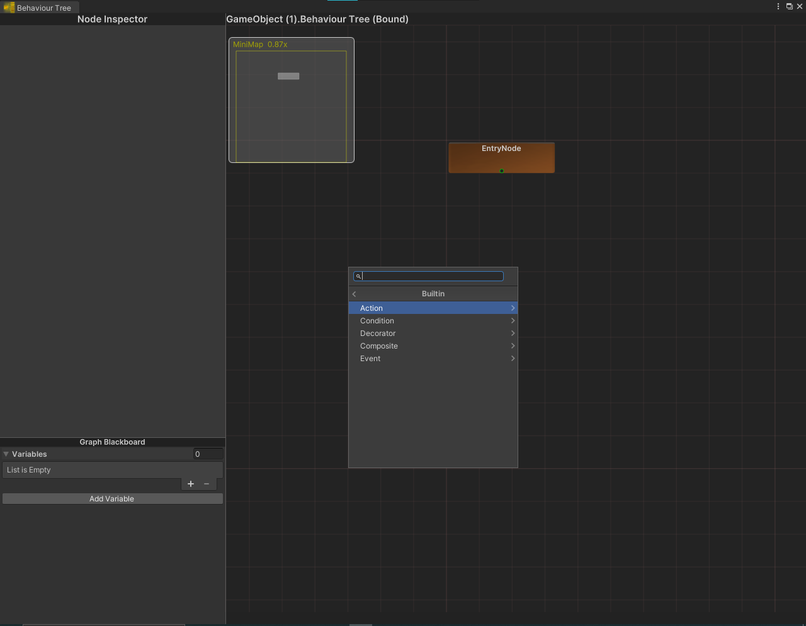
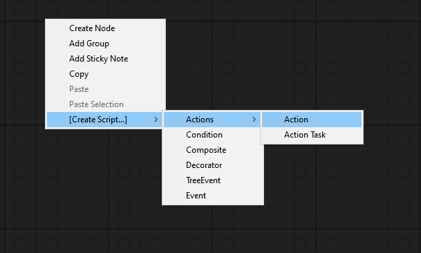
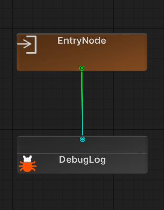
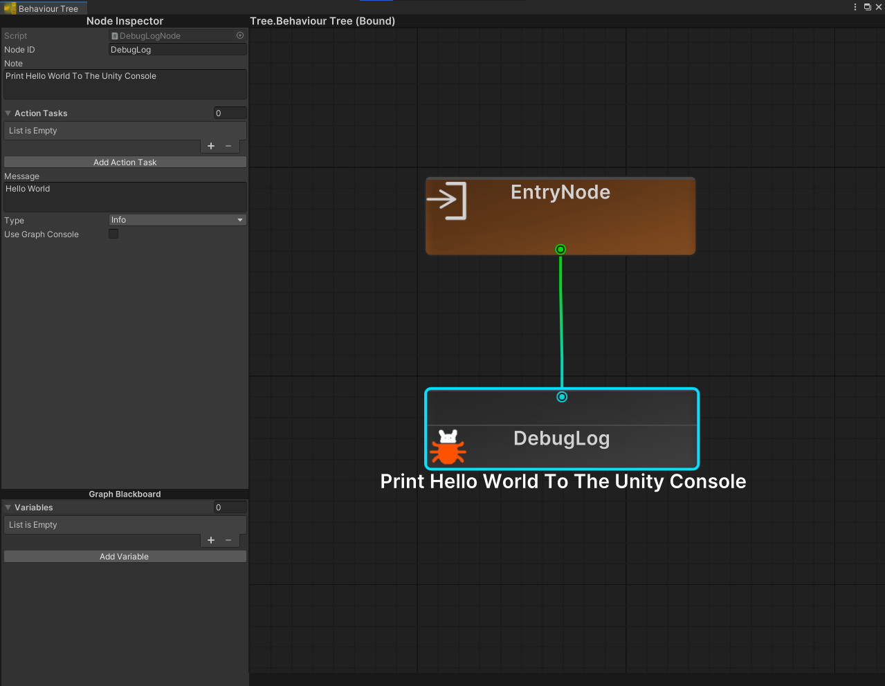
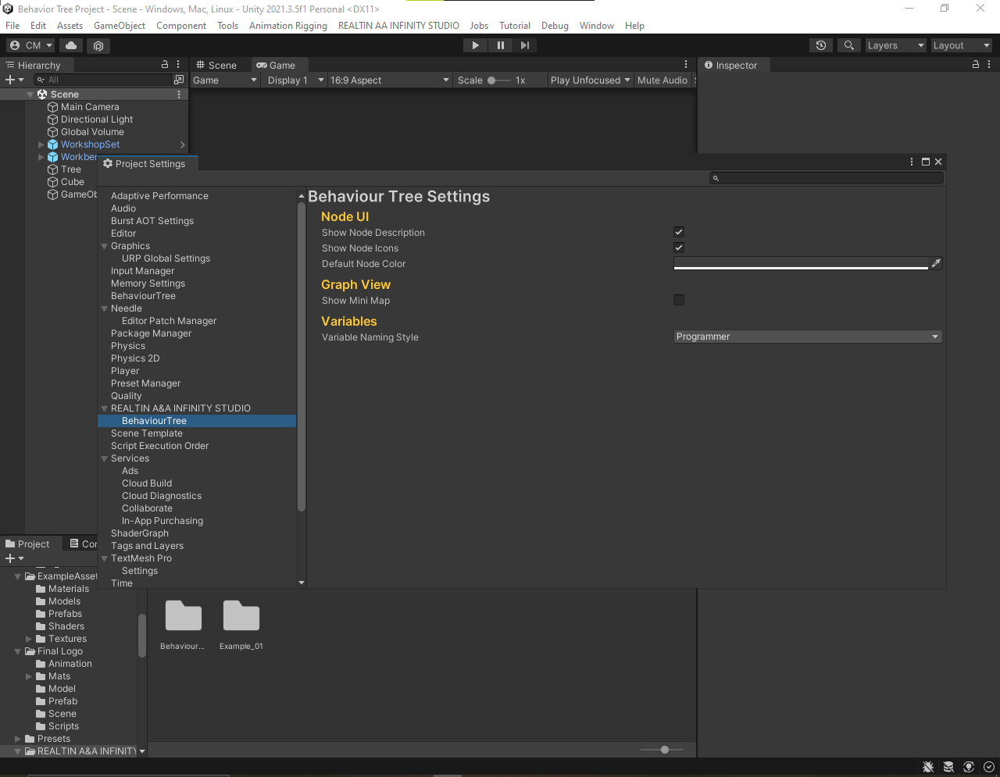
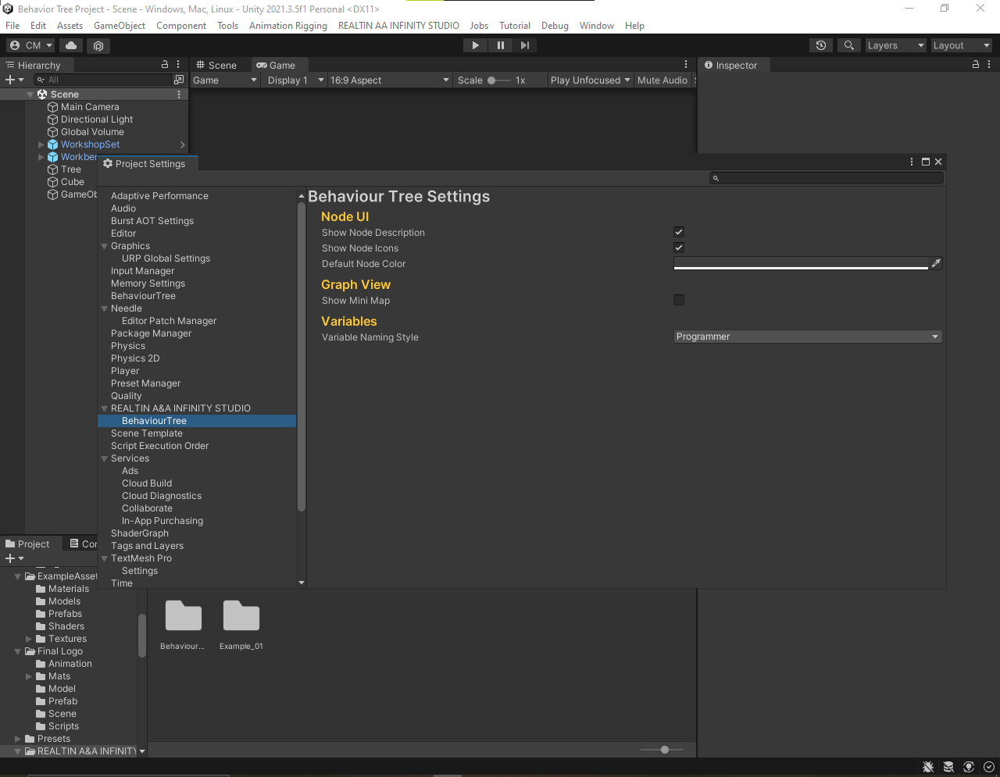

REALTIN A&A INFINITY STUDIO's BehaviourTree
Documentation

Table Of Content
1. Overview
2. Getting Started
3. Nodes
1. Action Nodes
1. Action Tasks
3. Composite Nodes
4. Decorator Nodes
5. Event Nodes
2. Condition Nodes
4. The Editor
1. GraphView
1. Adding Nodes
2. Creating New Nodes
3. Linking Nodes
4. Navigation
2. Node Inspector View
3. Graph Blackboard View
4. Runtime Debugging
1. Graph Console
5. Settings
6. BehaviourTree Assets
7. BehaviourTree Owner
8. Graph Blackboard
9. Global Events
10. Blackboard
11. Global blackboard
12. Saved Variables
13. Sub Graph Node
14. BehaviourTree Explorer
Overview
REALTIN STUDIO’s BehaviourTree is a general-purpose Asset, meaning
it has a wide range of different uses.
You can use it to create AI and none AI behaviors.
REALTIN STUDIO’s Behaviour Tree can be used as an FSM (Finite State Machine)
as in the Example 09 in the package.
The gun uses a BT (BehaviourTree) for the gun logic.
The boxes also use a BT for the logic.
One advantage REALTIN STUDIO’s BT has over FSMs is the ability to run multiple tasks in parallel.
You would have to create multiple FSMs to run multiple tasks in parallel.
REALTIN STUDIO’s BT is cleaner and more flexible than FSMs.


Each node in the BehaviourTree represents a block of code that the tree owner executes.
REALTIN STUDIO’s BehaviourTree has sub graphs to make the graph easier to debug and manage.
BehaviourTrees Overview
Behaviour trees are great at creating both simple and complex AI behaviors. One of the main advantages
of behaviour trees is their ability to breakdown complex behaviours into very simple units called Actions,
which can be rearranged in various ways to create new behaviours. This concept combined with a
custom editor in Unity provides a powerful toolset.
Getting Started
NOTE: The version used for testing at the time of writing is Unity 2021.3.5f1 LTS.
Nodes
REALTIN STUDIO’s behaviour tree starts execution from the entry node traversing down into its children.
Each node in the tree can return one of three states; failure, success, or running. It is up to the parent
node to decide how to interpret these return states, and decide what to do next if a failure occurs.
Generally, the tree traversal stops for the current frame when one of the children returns the running
state, in which case the recursion bubbles back to the EntryNode. There are five main types of nodes in
REALTIN STUDIO’s behaviour tree: Action, Condition, Composite, Decorator, and Event.
Action Nodes
Action nodes make up the bulk of the tree. They are always at the leaf of the tree, and have no children.
These nodes are responsible for changing the state of the world, and ultimately represent the agent's
capabilities. An agent’s capabilities should be represented as actions: reload weapon, walk to position,
wave. You will create many new types of actions to represent what the agents can do in your game. The
granularity of actions can either be large or small, but it's often a good idea to keep the actions
as small as possible to increase reuse across the tree. Once you have built a decent library of actions for your AI,
they can be composed together to create complex behaviours. When patterns start occurring between
commonly used nodes, the nodes can be merged back into a single node to reduce the clutter in the
tree.
Action Tasks
Action Tasks can be added to an action node to execute small functions.
Composite Nodes
Composite nodes represent the control flow of the tree, and can have many children. It's up to each
composite node type to decide which order the children should be executed in. Composite nodes also
monitor the failure state of its children. There are many ways to handle failures and execution order and
this is what differentiates each composite node from another. The two most common composite node
types are sequencer and selector. However, many other composite node types are usually necessary to
create complex logic. One example is the parallel node which is capable of executing multiple children at
once.
The sequencer node executes its children from left to right, stopping when one of the children returns
failure. In that case it will also stop and return failure back to its parent. This is most useful for executing
a sequence of actions in order. If any of the children fail the entire sequence will stop. A selector is the
opposite of a sequencer. Instead, it will continue executing each child, and stop when a child returns
success. This is useful if there is a sequence of actions that can fail and require a backup plan.
For example, an agent may first try to look for cover, and if there is none in sight then it will attempt to run
instead.
The composite node types included in the package are:

Decorator Nodes
Decorator nodes have exactly one child and are used to hide or modify the return state of that child. A
common decorator node is the inverter which negates the child’s return status. However, they are also
able to have complex logic inside them such as restarting a child when it returns failure X number of
times, or aborting a child that has been running for too long.
The Decorator node types included in the package are:
1. Failure - Always returns failure to the parent.
2. Succeed - Always returns success to the parent.
3. Inverter - Inverts the child’s return state from success to failure and vice versa.
4. Repeat - Restarts the child on failure and/or success.
5. Timeout - Aborts a child that has been running for too long.
6. Input - Executes the child if the game receives input from the player.
7. Loop - Executes the child x number of times per frame.
8. If - Executes the child node if a condition is true.
9. ForEach - Iterates a collection and executes the child while iterating the collection.
Event Nodes
Event Nodes are always at the top of the tree. They have no parents and only have one child.
Note: Event Nodes can be used to integrate the BehaviourTree with Machine Learning.
The Event node types included in the package are:
1. OnCollisionEnter
2. OnCollisionExit
3. OnCollisionStay
4. OnTriggerEnter
5. OnTriggerExit
6. OnTriggerStay
7. EventListener- An Event Listener can subscribe to a global event
Condition Nodes
Condition Nodes are always at the leaf of the tree, and have no children. These nodes are responsible
for checking the state of the world, and ultimately represent the agent's senses. An agent’s senses
should be represented as conditions.
The Condition node types included in the package are:
1. CompareBool – Checks if a Boolean value equals another value
2. Compare – Checks if a float, int, long, double is less, greater, equal, or not equal to a threshold
3. CompareString - Checks if a string value equals another string value
4. InDistance – Checks if a game object is in distance of the agent
5. InViewAngle – Checks if a game object is in view angle of the agent
6. InSight – Is inDistance an inViewAngle Combined
The Editor
The main window can be accessed via the menu REALTIN A&A INFINITY STUDIO -> BehaviourTree ->
BehaviourTree Editor
The editor has three main panels:
Node Inspector, Graph Blackboard, and GraphView

Graph View
The graph view is where you'll spend most of the time creating and organizing nodes.
Adding Nodes
New nodes can be added to the tree via the context menu by right clicking anywhere in the canvas and
selecting Create Node; a search window will open. Select built in, then select which type of node to add.
The nodes are grouped into five Categories:
Actions, Conditions, Decorators, Composites, and Events

Creating New Nodes
Nodes are standard C# scripts which inherit from one of six base types; ActionNode, ConditionNode,
CompositeNode, DecoratorNode, EventNode, or TreeEventNode. These scripts can be created by hand,
or by using the context menu.

Linking Nodes
To add a node as a child of another node, drag the output of the parent node to the input of the child
node.
Note: Only CompositeNode types can have multiple children.

Navigation
Nodes can be selected directly and dragged around the canvas. Multiple nodes can be box selected.
To select an entire subtree, double click on its parent and the children will be added to the selection.
Click on the canvas to deselect again. Selecting entire subtrees is really useful to reorganize the tree layout.
Keyboard Shortcuts:
KeyCode Action
DEL the currently selected nodes
A Frames all nodes on the canvas
O Frames the canvas origin
[ Frames the parent node of the current selection
] Frames the child node of the current selection
Node Inspector View
The node inspector view displays all public or serialized private properties of the currently selected
node. To display a node's properties in the inspector, be sure to select the middle of the node over the
node's title. All nodes have a note field which can be set in the inspector.
Just start typing in the note box and the text will appear under the node.

Graph Blackboard View
The Graph Blackboard View displays all variables in the GraphBlackboard.
Runtime Debugging
While in playmode, a game object can be selected to analyze which state it is in. Nodes that are red have
failed, nodes that a green have succeeded, and nodes that are yellow are currently running. If a node is
aborted then it returns to the default state without any highlight.

Graph Console
The Graph Console is similar to the unity console.
You can log messages to the graph console.
Sample Code
protected override State OnUpdate()
{
GraphConsole.Log("Hello World");
return State.Success;
}
 There are various settings for the behaviour tree editor. These can be accessed via the
standard project settings menu under the 'REALTIN A&A INFINITY STUDIO -> BehaviourTree' category.

There are various settings for the behaviour tree editor. These can be accessed via the
standard project settings menu under the 'REALTIN A&A INFINITY STUDIO -> BehaviourTree' category.

BehaviourTree Assets
There are two types of the Behaviour tree assets:
Assets and Bound.
Assets are saved in the project and can’t reference scene objects.
Asset behaviour trees can be used on multiple instances.
Bound are saved in the scene and can reference scene objects.
Bound behaviour trees can’t be used on multiple instances.
For teams using source control it’s recommended to use asset behaviour trees.
BehaviourTree Owner
A behaviourTree Owner holds a reference to a behaviourTree Asset and is responsible of running the tree.
Graph Blackboard
The Graph Blackboard holds all variables that the behaviour tree asset uses.
Global Events
The Global Events hold all events in a scene.
Multiple behaviourTrees can subscribe to events in the global events.
When a BehaviourTree sends a global event, all trees subscribed to that event will be involved.
Example
If an Agent sees the player, he can send a global event to make all agents aware of the player’s position.
Blackboard
The Blackboard can be used as an indirect way for asset behaviour trees to reference scene objects.
Global Blackboard
The global blackboard is a single instance of the blackboard in a specific scene.
Multiple BehaviourTrees can read and write to the global blackboard.
Saved Variables
The saved variables component saves all variables in the blackboard to a Json file.
Note: Unity Object references are not supported.
SubGraphNode
The sub graph node holds a behaviour tree asset and its responsible for initializing and running the tree.
Variables in the sub graph will act as properties in C#.
A Variable is bound to another variable of the same type with the same name.
Example: An integer variable in the sub graph with the name MyInt
will be bound to an integer variable in the main graph or the blackboard with the name MyInt.
The sub graph node returns the state of the behaviourTree its running.
BehaviourTree Explorer
The BehaviourTree Explorer displays all BehaviourTrees in the project.
BehaviourTrees are categorized making them easier to find.